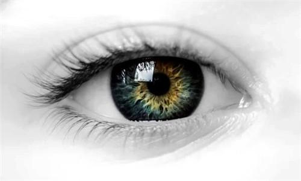

<div class="container">
<div class="panel">
  <div class="page-header">
    <h1><b>Glaucomatous Chemogenomics Database</b></h1>
  </div>
  <div class="well panel-body">
    <div class="col-md-6">
      
    </div>
  <div class="well-lg">
    <!--<p>-->
      <!--<b>Glaucoma</b> is a group of eye diseases which result in damage to the optic nerve and vision loss.-->
      <!--The most common type is open-angle glaucoma with less common types including closed-angle glaucoma-->
      <!--and normal-tension glaucoma. Open-angle glaucoma develops slowly over time and there is no pain. Side-->
      <!--vision may begin to decrease followed by central vision resulting in blindness if not treated. Closed-angle-->
      <!--glaucoma can present gradually or suddenly. The sudden presentation may involve severe eye pain, blurred-->
      <!--vision, mid-dilated pupil, redness of the eye, and nausea. Vision loss from glaucoma, once it has occurred,-->
      <!--is permanent.-->
    <!--</p>-->
    <!--<p>-->
      <!--Risk factors for glaucoma include increased pressure in the eye, a family history of the condition, migraines,-->
      <!--high blood pressure, and obesity. For eye pressures a value of greater than 21 mmHg or 2.8 kPa is often used-->
      <!--with higher pressures leading to a greater risk.However, some may have high eye pressure for years and never-->
      <!--develop damage. Conversely, optic nerve damage may occur with normal pressure, known as normal-tension glaucoma.-->
    <!--</p>-->
    <!--<p>-->
      <!--About 6 to 67 million people have glaucoma globally. It occurs more commonly among older people.-->
      <!--Closed-angle glaucoma is more common in women.Glaucoma has been called the "silent thief of sight" because-->
      <!--the loss of vision usually occurs slowly over a longperiod of time. Worldwide, glaucoma is the second-leading-->
      <!--cause of blindness after cataracts.-->
    <!--</p>-->
    <!--<p>-->
      <!--<b>Glaucoma Database</b> Glaucoma Database collected infomation about 92-->
      <!--<a [routerLink]="['/data-browse/uniprot']" routerLinkActive="active">protein targets</a> and 68597-->
      <!--<a [routerLink]="['/data-browse/compounds']" routerLinkActive="active">compounds</a>.-->
    <!--</p>-->
    <p>
      <b>Glaucoma</b> is a group of neurodegenerative diseases which affects 60 ~ 70 million people worldwide, is a
      painless neurodegenerative disorder and the second cause of blindness after cataracts, resulting in optic nerve
      damage and irreversible blindness.
    </p>
    <p>
      <b>GCDB</b> is one platform available for either to identify potential drug targets or to screen new drug
      scaffolds for glaucoma treatments. <b>GCDB</b> contains 275 genes, 95 proteins, 31 approved drugs, 120305 chemicals
      associated with 303781 records of reported glaucoma bioactivities from 11366 glaucoma corresponding bioassays
      and 2983 references.
    </p>
    <p>
      The glaucoma database website allows analysis of pharmacological target space and searching for the
      drugs as well as targets of interest. The platform also provides implementation of a ligand-based
      computational algorithm for virtual screening and target prediction, by assessing the activity of a query
      molecule based on its similarity to the active ligands for a given target.
    </p>
    <p>
      <b>GCDB</b> will be helpful in target identification and chemogenomics data exchanging and sharing in glaucoma,
      and facilitate the drug discovery for glaucoma treatment.
    </p>

  </div>
  </div>
</div>
</div>
